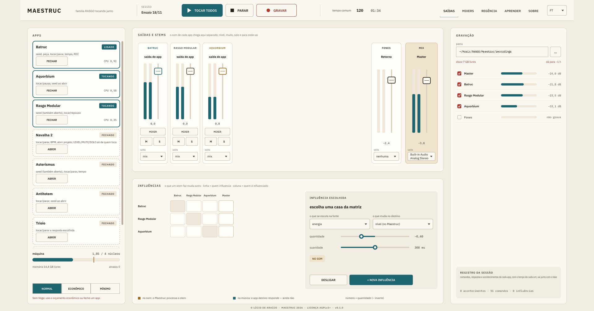

Maestruc
Maestruc is the conductor of the RASGO family. It opens the instruments installed on the computer and makes them play together, like an orchestra: each one's sound arrives on its own strip, is mixed, can influence the others and is recorded track by track. Each instrument keeps running in its own process and interprets what Maestruc asks: influence is not control.
The interface

How it works
Open
Each installed RASGO instrument shows up on a card. OPEN starts it already connected to Maestruc; one that is not installed leads to its official page.
Mix
Each one's sound arrives on a strip: level, mute, solo and destination. Master and headphones, each on its own device; the Master has a true-peak limiter.
Influence
One strip changes another in the sound, listening to its energy, attacks, density or silence. When Batruc plays, Aquorbium makes room.
Conduct
Seed and piece for each instrument, when opening it or while it plays; play and stop for all; tempo.
Record
Each strip and the Master as 24-bit WAV, one folder per take, with a log of what happened and the delivery version for streaming (−14 LUFS, up to −1 dBTP).
The instruments
Batruc, Aquorbium, Rasgo Modular, Navalha 2, Rasgo Synth Asterismus, Antitotem, Trioio and Rasgo Synth Studio. Each one is installed from its own site; Maestruc never downloads or installs anything.
- Influence is not control: each instrument interprets the request its own way, and keeps playing on its own if Maestruc closes.
- No virtual sound card: the sound arrives through a shared-memory bridge, on Windows, macOS and Linux (on Linux also through PipeWire).
- Once a day, if you allow it, it checks whether each instrument has a new version, and only tells you.
Not yet: asking an instrument to change its own music (“in the music”). For now influence happens in the sound, inside Maestruc.
For instrument makers
The control channel is the maestruc.link/1 protocol: OSC on the local machine only, a session password and only the capabilities each instrument declares. The receiver and the sound bridge are two headers the instrument copies; without --maestruc it stays autonomous and opens no port.
Credits
Lúcio de Araújo — concept, interface and code. Navalha 2 — Glerm Soares and Lúcio de Araújo. Built with JUCE 9.0.3 (AGPLv3). Licence GNU AGPLv3 or later.
Status
Version 0.1.0 is in preparation. Maestruc has been built, tested and played on Linux; the Windows and macOS packages are built and tested by continuous integration and have not yet been opened on real machines.